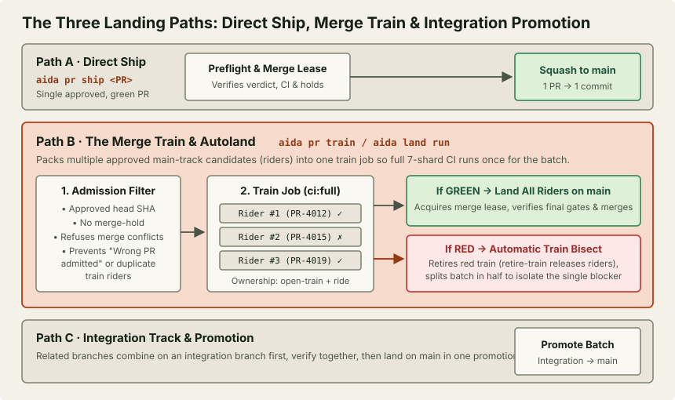
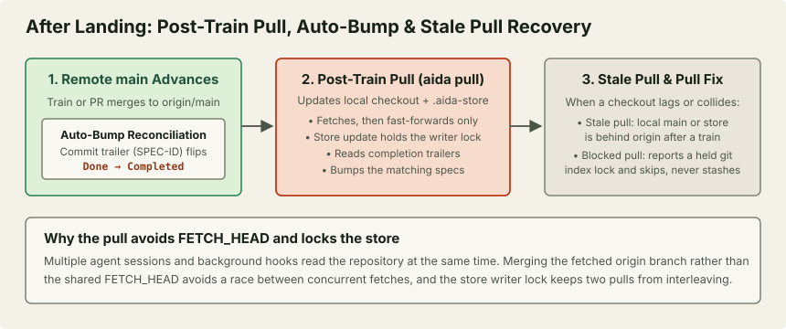
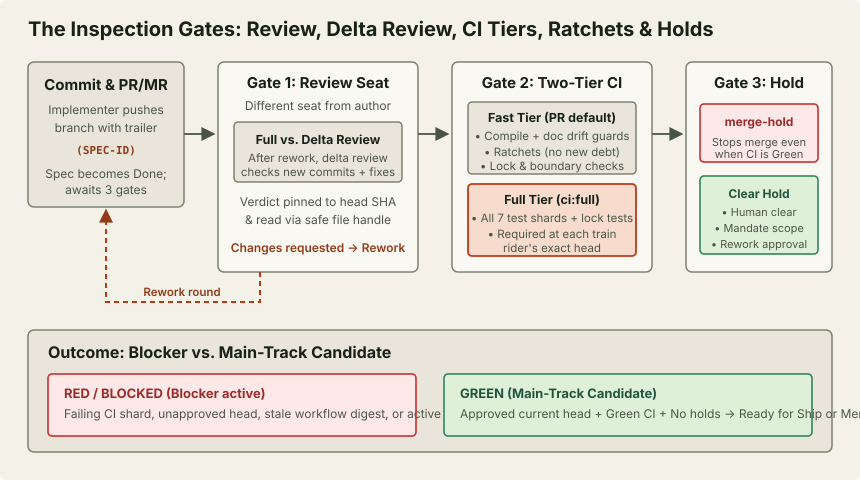

THE GOVERNED SOFTWARE FACTORY
From a conversation to a maintainable system

AIDA connects the work people and agents do with the intent behind it. Start with a conversation, develop the system, and keep enough structured context for the next change. You can remain involved throughout or delegate selected stages under the project's policy.
The collaboration loop
- Discuss the outcome. A person and coding agent explore the problem, constraints and alternatives. The person can develop, challenge and review the work throughout.
- Capture agreed intent. The agent records requirements, acceptance criteria and consequential decisions in the project graph. Ask to inspect the record before implementation.
- Own a bounded change. The work is assigned to a role and session. Isolated worktrees give separate changes their own checkout; leases and queue state coordinate ownership.
- Implement and validate. Build the agreed behavior, link it to its specs and run the relevant checks. New discoveries can require revised intent or a separate decision.
- Review independently. In the governed PR workflow, a separate reviewer evaluates the current change and its evidence. The author's self-check is useful preparation and does not constitute independent approval.
- Integrate under policy. The authorized shipping path checks the applicable evidence and gates. Integration can lead to another conversation; a merged change and a released product are separate milestones.
These are stages in an operating model, not a promise that every project uses one autonomy mode. The configuration guide explains how execution mode, guidance and authority remain distinct. The graphic is explanatory, not a live dashboard.
The multi-seat workflow in plain language
When several agents work in parallel, status views, logs and handoffs use operational words: lanes, worktrees, leases, seats, grants, merge holds, merge trains, riders, bisect and post-train pulls. This section follows one change through those stages. Exact flags are in aida <command> --help; terms are defined in the product glossary.
Choosing how closely to steer a change
You do not manage worktrees, leases or gate ledgers by hand. You describe an idea, the agent captures it as a spec, and the advisor approves it with an execution mode that sets how much you stay involved.
- Decide. The spec still has an unresolved choice. No lane starts until you settle it, for example with
/aida-grilloraida decide, and the criteria are updated. - Guided. Keystone or high-risk work. You and the agent work through each slice with
/aida-guided-implement. The pull request carries a merge hold until you clear it. - Drive. One feature runs unattended in its own lane (
aida do <spec>) through review and CI, then stops at the held pull request for you to inspect and ship withaida pr ship. - Drain. Ready backlog work runs in parallel lanes (
aida queue work --auto-complete). Design forks are punted to you, and approved changes ride a merge train to main.
A higher-oversight mode can always be chosen; moving a spec to a less supervised mode needs --force.
Tracing one idea from a prompt to main
Follow a single feature idea, "add jittered retry backoff to the webhook client", across five swimlanes:

- Steps 1–2 (you and the advisor seat). You describe the idea. The agent captures a Draft spec with intent and acceptance criteria (
aida add), and an advisor approves it with an execution mode (aida edit <spec> --status approved --mode drain). Before any lane starts, a pickability check confirms the spec is work, not human-only, not waiting on a decision and not blocked by an unfinished dependency. - Steps 3–4 (the implementer lane).
aida queue workpicks up the queued spec and launches a fresh session in its own worktree. The agent writes the change and tests, commits with a commit trailer naming the spec, opens a pull request and marks the spec Done. - Steps 5–7 (review, rework and delta review). CI runs while a review story routes the pull request to a separate reviewer seat. If the reviewer requests changes,
aida reworkstarts a rework round; the fix is pushed as a new head commit, and a delta review checks what changed.aida review recordstores the approval for that exact head. - Steps 8–10 (merge train, landing and post-train pull). The approved pull request boards a merge train as a rider. When the combined ci:full run is green, the train lands on main. A post-train pull (
aida pull) brings the commits into each checkout and moves the spec from Done to Completed.
Act 1: The workshop — queues, lanes, worktrees and leases
Two agents editing the same folder at the same time overwrite each other's files. AIDA gives each active spec or review its own lane instead.

- Queue and pickup. Approved specs wait in a role's queue (
aida queue list).aida queue worklaunches the head of the active role's queue, or a named item, in a fresh session. - Lane and worktree. A lane is the whole unit of isolated work: the spec, the session, its seat and its lease. Its worktree is the separate checkout on disk, a sibling directory on the task's branch, so the main checkout is never touched.
- Session and lease. The session record names the spec, branch, worktree and owning process. Its lease tells every other session that this spec and branch are occupied, so a second pickup refuses rather than clobbering work.
aida session leaseslists them. - Handoff and rotation. A long conversation eventually fills the model's context window. Before that, the session writes a handoff brief (the
/aida-handoffskill) and a fresh session continues from it.aida session handoffonly advises whether a fresh session or compaction is safer. - Crashes and sweeps. If a process dies without ending cleanly, its lease names a dead process and its worktree goes stale.
aida session leasesmarks it stale;aida session reapand the hourlyaida session hygienepass clean up finished sessions and keep any uncommitted work for a person to salvage or discard.aida session endends a session deliberately, andaida worktree gcreports leftover checkouts.
A lease is different from a lock file. A lock file (for example the store writer lock or git's index.lock) protects one read-modify-write for milliseconds; a lease records ownership for the whole life of a session, often hours.
Act 2: The control tower — roles, seats, grants and mailbox
A role label shapes what a session sees: its instructions, queue and statusline badge. It confers no authority. A privileged step, such as recording a review verdict, clearing a merge hold or shipping to main, needs a seat held under a live grant, minted at an interactive terminal with aida role enter <seat> or delegated as a child grant. An operator can also start a mandate that lets unattended sessions take bounded steps.
| Seat | What it owns |
|---|---|
| Product | Intake, acceptance-criteria quality, backlog order and launching eligible work |
| Advisor | Judgment: spec disposition, design-fork punts, review verdicts and merge readiness |
| Integration | The mechanical cascade: merges into the integration branch, promotions and merge trains |
| Implementer lanes | One bounded spec each, in an isolated worktree, under any supported agent vendor |
Seats coordinate through the mailbox rather than a vendor's in-memory chat, so a message reaches the seat whether Claude Code, Codex or Antigravity is hosting it, and leaves a record:
aida mailbox send --to seat:advisor --intent fyi "Promotion landed on main; run aida pull"
aida mailbox send --to seat:integration --intent request "Check train eligibility for open PRs"
aida mailbox send --in-reply-to <message-id> "Confirmed; the train is green"
aida mailbox inbox--to seat:<name> reaches whichever session currently holds that seat, and --in-reply-to finds the sender's seat even after they rotated into a fresh conversation.
Act 3: Landing paths — direct ship, merge train and integration promotion
An approved pull request reaches main by one of three paths. Each checks the same evidence: an approval recorded at the exact head commit, green required CI, and no merge hold.

- Path A — direct ship (
aida pr ship <n>). One pull request is squash-merged as one commit. A refusal names its gate in the exit code, for example a stale CI definition or a merge hold. - Path B — merge train (
aida pr train <n>…or--all-ready). Two pull requests that are each green can still break main together. A train stacks main plus one squash commit per rider, checks each carries exactly its approved diff, and opens atrain/*pull request so CI runs on exactly what main will receive. On a tiered repository a rider must already have a green full-tier run at its head.aida pr train --check --all-opensays which pull requests would ride and why not;--dry-runpreviews the plan. - Path B, green train: when the train is green and main has not moved, it is rebase-merged pinned to its tested head, and each rider's pull request is closed with a pointer to its commit.
- Path B, red train: a failing test is never simply rerun. The train is split in halves (bisect) until each bad rider is isolated and left out with a comment. Only a run cancelled before it produced a test result is retried, once.
- Autoland:
aida land rundrives this loop: it launches reviewers and rework lanes, releases holds whose condition is met, and sends every ready change to one train.aida land statusshows each open change's state. - Path C — integration branch and promotion. Coupled work lands first on a shared integration branch (
aida integration merge), is checked together, and reaches main in one promotion.aida integration promotion-checkrefuses a promotion that contains a change without an approval at the head that was merged. A(Refs <spec>)trailer marks a partial slice; only a completing trailer moves the spec to Completed.
Act 4: After landing — post-train pull and recovery
Landing on the remote main is not the last step. Local checkouts and the requirement store must catch up with what landed.

- Auto-bump. When a commit with a completing trailer
(<spec>)reaches main,aida pullreads it and moves the spec from Done to Completed. A(Refs <spec>)trailer leaves the spec open. - Post-train pull. After a train or promotion lands, every other checkout is behind.
aida pullfetches and fast-forwards the code branch, then syncs theaida-storebranch under the store writer lock. It merges the fetched branch rather than relying on the sharedFETCH_HEAD, which concurrent fetches can overwrite. - Stale or blocked pulls. If another git process holds the index lock,
aida pullsays so and skips the code update rather than stashing the working tree; wait for that process and pull again.
Act 5: The inspection gates — review, CI tiers and holds
The landing paths in Act 3 rely on three independent gates. A pushed commit with a commit trailer marks the spec Done, but the change is not a landing candidate until all three pass.

- Gate 1, independent review. A reviewer in a different seat from the author checks the change against the spec's acceptance criteria. The verdict is pinned to the exact head commit. Changes requested start a rework round, and the next pass can be a delta review of the new commits.
- Gate 2, two-tier CI. Pull requests run the fast tier by default: compile, documentation drift guards, ratchets that refuse new debt, and lock and boundary checks. The full tier (ci:full) runs every test shard; on a tiered repository a train admits a rider only when its exact head has a green full-tier run.
- Gate 3, merge hold. A merge hold stops landing even when CI is green. A supervised pull request gets one automatically. A person (
aida merge-hold clear), a mandate in scope, or a current-head approval of a rework round releases it.
A change is ready for aida pr ship or a merge train only with an approval at its current head, green required CI and no hold.
When work takes a detour
Each common failure has an explicit recovery loop, so an agent neither guesses nor discards work.
- An unstated design choice. The implementer refuses to guess and runs
aida puntwith thedesign-forkcategory. The spec is parked in Needs Attention and a drain moves on. You answer withaida decide, and the work resumes from its recorded session (aida queue work <spec> --resume). - The reviewer requests changes.
aida rework <spec>hands the findings to an implementer, who pushes a fix to the same pull request. An approval at the new head releases the rework-only hold. - A red merge train. The train is retired and bisected until the failing rider is isolated. The healthy riders still land; only the blocker returns for rework.
- A crashed session or stale checkout.
aida session leasesshows a lease whose recorded process is gone as stale.aida session reapcleans up finished sessions while keeping uncommitted work,aida worktree gcreports clean leftover checkouts (and skips dirty ones), andaida pullbrings the checkout back in step with main.
Act 6: The state machines behind the badges
The status badges, refusal messages and mode names in the CLI come from a few enums in the source, so their rules are fixed rather than conventions.
- Requirement status. Nine states: Draft, Approved, Planned, In Progress and Needs Attention are open; Done, Completed, Superseded and Rejected are closed. A completing trailer on main moves Done to Completed. Defined in
aida_core::models::RequirementStatus. - Execution mode. The ladder runs drain, drive, guided, operator by increasing human involvement; decide sits outside it as a block. Only drain and drive run unattended.
- Pickability. Before any pickup AIDA checks, in order, that the spec is work rather than reference material, is not human-only, is not waiting in Needs Attention, and has no unfinished or rejected blocker.
- Locking posture. The
[locking]posture defaults to context-aware, which refuses a lock mismatch only during a drain;off,warnandenforceoverride it.
Field guide: words that sound alike
Three pairs of words get mixed up in conversation. Each pair names two different things, and the difference matters when something goes wrong.
| Lane | Worktree | |
|---|---|---|
| What it is | The whole unit of isolated work: a spec or review, its session, seat and lease, its branch and its checkout | A second checkout of the repository on disk, created with git worktree add, sharing the main repository's Git objects |
| When it starts and ends | Starts with aida queue work and ends with aida session end | Created when the lane starts; left behind as a stale checkout if the session dies, until aida session reap or aida worktree gc deals with it |
| Analogy | An operating theatre in use: room, patient, surgeon and chart | The room alone |
| Role | Seat | |
|---|---|---|
| What it is | A job label such as advisor, implementer, reviewer or product | A station in the build loop that a session holds under a live grant |
| What it controls | What the session sees: its instructions, queue and statusline badge | What the session may do: privileged steps such as recording a review verdict or shipping |
| How it is set | An environment label or --role flag. It confers no authority. | aida role enter <seat> at an interactive terminal, or a delegated child grant |
| Conversation | Session | |
|---|---|---|
| What it is | One chat transcript with a model in Claude Code, Codex or Antigravity | One tracked unit of ownership that binds a seat, lease and worktree to a spec or review |
| What bounds it | The model's context window | The work it owns, from aida session start to aida session end |
| How they map | One advisor conversation can file and groom ten specs without starting any session | One large spec can rotate through several conversations, each continuing from the last one's handoff |
What you choose, what you configure, and what runs on its own
You do not need every term on this page to use AIDA. Most words fall into one of three groups: choices you make for a piece of work, project or host settings with safe defaults, and mechanisms that run without you. Some rules hold regardless of configuration.
| Concept | You choose or configure | Fixed rule |
|---|---|---|
| Execution mode | Per spec, when it is approved: aida edit <spec> --mode drain (or drive, guided, operator, decide) | Only drain and drive run unattended; a guided pull request always carries a merge hold |
| Mandate | At an interactive terminal: aida mandate start --ship-held or --drive, a --ttl, and the opt-ins --include-supervised and --include-gate-paths | It needs a person at a terminal and never covers operator-only specs; its lifetime is capped at 24 hours unless [mandate] max_ttl_hours in ~/.aida/config.toml changes the cap, which never exceeds 168 hours |
| Informational CI | [ci] informational_workflows in .aida/config.toml (default ["Cross-platform*"]) and informational_checks | A required check still gates the merge, even when its name matches the list |
| Lane capacity | [queue] standalone_implementer_cap in ~/.aida/host.toml or .aida/config.toml | One drain drives a repository at a time; a second drain, even from another clone, is refused while the first holds its claim |
| Locking posture | [locking] posture: context-aware (default), off, warn or enforce | Every store write still takes the store writer lock |
| Review | Which vendor and model reviews, through agent configuration | The reviewer must be a different seat from the author, and the verdict is pinned to the head commit |
| Runs on its own | Nothing to set: leases, cache refresh, auto-bump to Completed, train bisect | The read cache confers no authority and can always be rebuilt from the store |
What progress means
In the standard PR lifecycle, Draft captures an idea, Approved records agreement, In Progress means implementation has started, and Done means work is finished on a branch. Completed follows recognized integration evidence on the default branch. Planned is optional; Needs Attention and terminal dispositions handle work that cannot simply proceed.
A status is a recorded signal, not proof that deployed behavior is correct. Read the lifecycle reference for transition rules and exceptions. Deployment and release need their own project workflow.
Four records with different jobs
- Code history: source, tests, trace comments and commits live on the product's code branches. Traces connect implementation to structured intent; they do not themselves approve a change.
- Canonical intent: the default git-canonical store uses the orphan
aida-storebranch and a live.aida-store/worktree. YAML spec objects contain requirements, relationships, comments and transition history. Store history is separate from code history and must be synchronized deliberately. Sibling-store projects use their configured separate store repository. - Derived read cache:
.aida/cache.dbindexes store data for reads. It is rebuildable from the available canonical store and is not a replacement for that history. Cache reads can report stale, deferred or busy context; inspect freshness rather than assuming every displayed view is current. - Local operational evidence: session files, verdict artifacts, holds and handoff notes have local runtime locations under
.aida/; machine grants and mandates have their own local authority context. Their scope, validation and retention differ from canonical intent. A store clone or cache rebuild does not recreate all of them or confer authority.
This is a map of responsibilities, not a backup recipe or complete directory inventory. Some coordination events also live in the store, and the storage reference describes the particular data surfaces. Back up the canonical histories and needed local evidence according to your actual project setup.
Keep the intent useful
For maintenance, ask the agent to locate the requirement and decision behind an existing behavior before changing it. aida why can resolve a code location through nearby trace comments. For enhancement, use the current acceptance criteria and relationships to identify what needs revising. For collaboration, hand over the agreed intent, implementation links and unresolved questions so another person or agent can continue.
The graph is structured project memory, not a transcript archive or complete observation of everything an agent did. Its value depends on what was captured and kept accurate. Ask for a capture sweep at handoff, verify the record and keep consequential corrections explicit.
Read the evidence behind the model
The getting-started guide covers everyday conversational use. Operators can inspect aida show, aida history, aida status and aida cache status; exact flags are in command help. Contributors can inspect the cache implementation, storage abstraction, session lifecycle and product architecture for the source behind these distinctions.